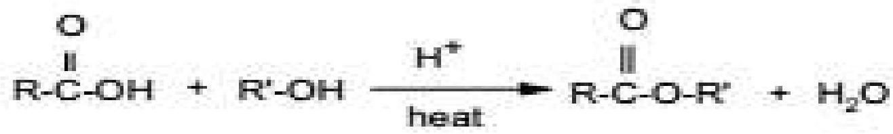
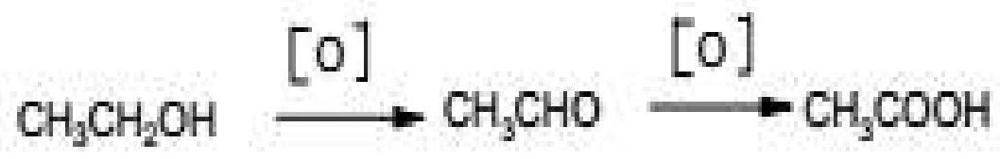

UNIT 11: CARBOXYLIC ACIDS AND THEIR DERIVATIVES
Unit objectives
By the end of this unit, the learner should be able to:
- Name carboxylic acids and derivatives
- State the methods of preparing carboxylic acids and their chemical reactions
11.1 Introduction
The general molecular formula of this series can be represented as $\mathrm{C_nH}_{2}\mathrm{O}_{2}$. The carboxylic acids contain both the carbonyl group ($\mathrm{C}=\mathrm{O}$) and hydroxyl group (-OH). In this section we shall try to understand the ways that carboxylic acids, which possess the -COOH functional group, are similar to and different from alcohols, which have the -OH group, and aldehydes and ketones, which have $\mathrm{C}=\mathrm{O}$ bonds.
Many carboxylic acids have trivial names and are often referred to as 'fatty acids' which refers to the naturally occurring straight chain saturated and unsaturated aliphatic acids. E.g. palmitic acid, stearic acid, oleic and linoleic acids.
The simplest carboxylic acids are methanoic/formic acid ($\mathrm{HCO}_{2}\mathrm{H}$) and ethanoic/acetic ($\mathrm{CH}_{3}\mathrm{CO}_{2}\mathrm{H}$) acid.
Physical properties of carboxylic acids
- They have substantially higher melting and boiling points relative to alcohols, aldehydes or ketones.
- They are soluble in water
11.2 Chemical properties of carboxylic acids
- Acidic behaviour
Ethanoic acid is a weak acid that is slightly ionized in dilute solution.
Presence of hydrogen ions ($\mathrm{H}^{+}$) gives the solution acidic behavior and therefore:- It turns blue litmus red
- Forms a salt when reacted with a base.
- It liberates carbon dioxide to form carbonate.
- Reaction with chlorine
In the presence of light, ethanoic acid reacts with $\mathrm{Cl}_{2}$ to form monochloroethanoic acid and hydrogen chloride gas.
$\mathrm{Cl}_{2\text{(g)}} + \mathrm{CH}_{3}\mathrm{COOH}_{\text{(l)}} \xrightarrow{\text{Sunlight}} \mathrm{CH}_{2}\mathrm{ClCOOH}_{\text{(l)}} + \mathrm{HCl}_{\text{(g)}}$ - Esterification
When carboxylic acids react with alcohols in the presence of an acid, an ester is formed. This process is referred to as esterification. Water is produced in the reaction. The reaction can be generally represented as below. 
11.3 Preparation of carboxylic acids
They can be prepared by application of several methods.
E.g. By oxidation of aldehydes or alcohols
Alcohol → aldehyde → carboxylic acid
A large number of oxidizing agents are used for these conversions e.g. potassium permanganate, $\mathrm{KMnO}_{4}$ and potassium dichromate, $\mathrm{K}_{2}\mathrm{Cr}_{2}\mathrm{O}_{7}$.
Carboxylic acid derivatives
The combination of other functional groups with carbonyl group leads to the formation of carboxylic acid derivatives. They include acyl chlorides, anhydrides, esters and acid amides.